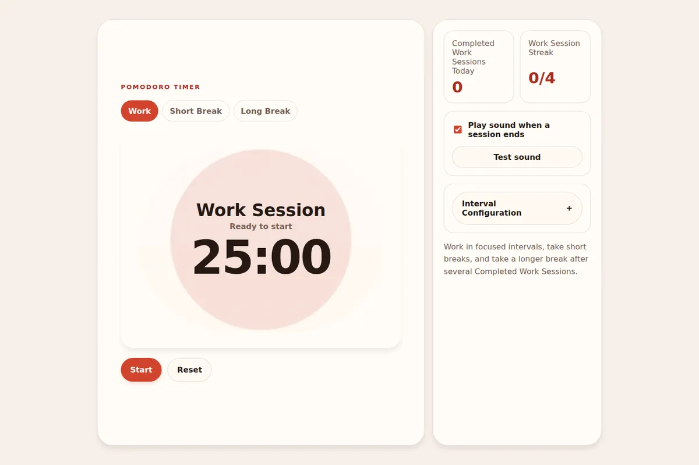

Case Study · 03
Pomodoro Timer
A reliable interval timer with configurable Work Sessions, recovery breaks, and browser state that survives an interrupted session.
React · TypeScript · Vite · Web Audio API

The problem
A countdown becomes unreliable when time, cycle rules, and restored browser state disagree about which interval is active or when it should finish.
The solution
I separated timer transitions from presentation, persisted an absolute deadline, and made session state operable through native controls, visible labels, and keyboard focus.
The source repository is not yet published.